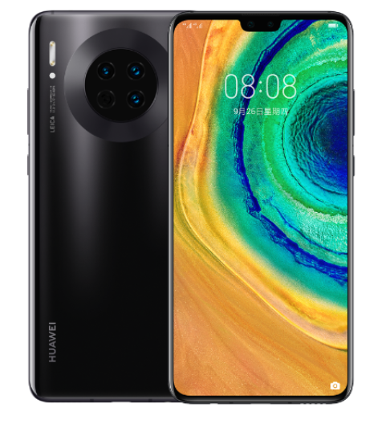
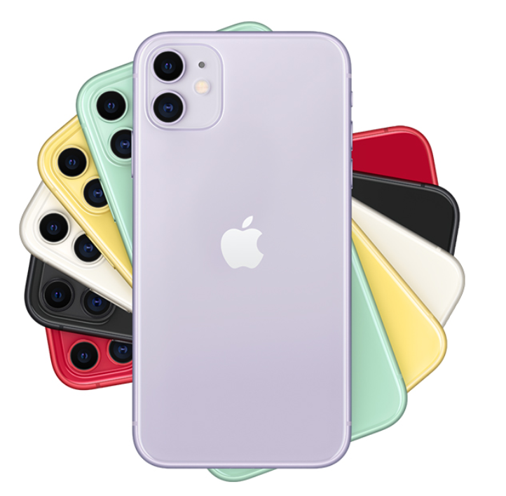
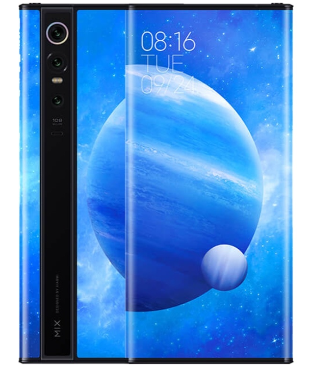

- 
- 2015年华为入选Brand Z全球最具价值品牌榜百强，位列科技领域品牌排名第16位。
- 2018年第二季度，华为的出货量超过苹果手机，跃居全球第二位。
- 2019年2月24日晚，在MWC2019华为终端全球发布会上，华为正式发布华为Mate X
- 2019年9月26日，华为发布Mate 30系列国行版，带来Mate30、Mate 30 Pro和Mate 30 RS三款新机型。
- 
- 苹果公司全球软件开发者年会2007中推出第一代iPhone
- 苹果在2010年6月7日发布了iPhone 4。乔布斯盛赞了iPhone4的设计
，因为它提供了全新的工业设计。
- 苹果将iPhone4称为自第一代iPhone以来最大的飞跃。
- 2019年9月13日，中国大陆地区iPhone 11开启预购。
- 
- 北京小米科技有限责任公司成立 [1] 于2010年3月3日
- “为发烧而生”是小米的产品概念。“让每个人都能享受科技的乐趣”是小米公司的愿景。
- 2013年7月31日小米正式杀入千元智能手机市场
- 2019年9月，小米入选“2019中国大数据企业50强”榜单。
- OPPO [1] 是一款主要以拍照（自拍）作为亮点的手机品牌
- OPPO R9s、OPPO R9s Plus是OPPO在2016年10月19日发布的智能手机
- 2018年6月1日，OPPO宣布新一代Find旗舰为OPPO Find X将于2018年6月19日在巴黎卢浮宫正式发布。
- 2018年8月23日晚间，OPPO在上海发布了全新OPPO R17系列手机。